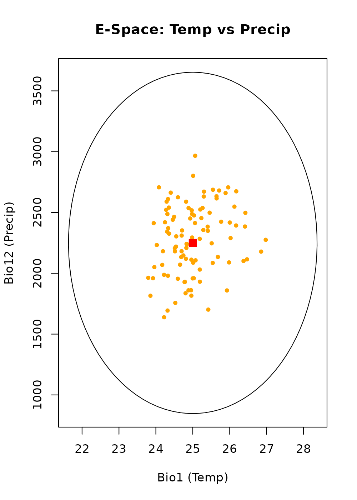
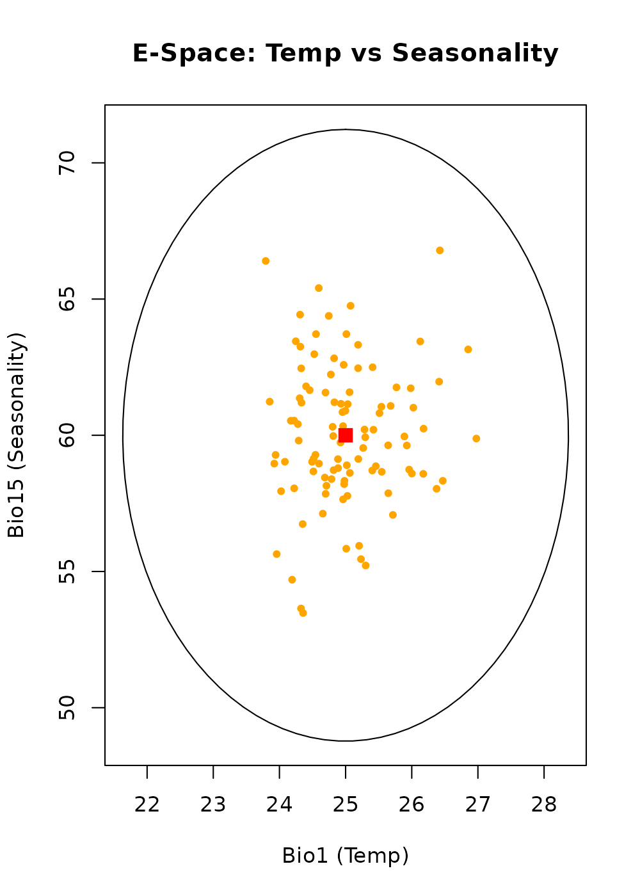
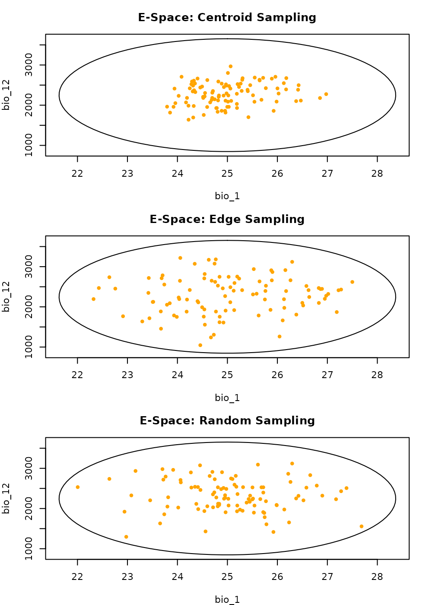
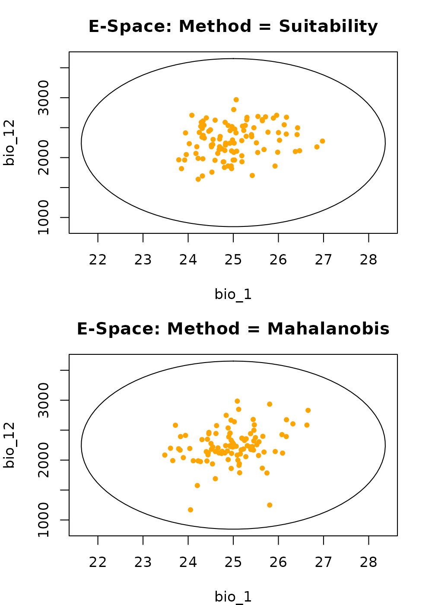
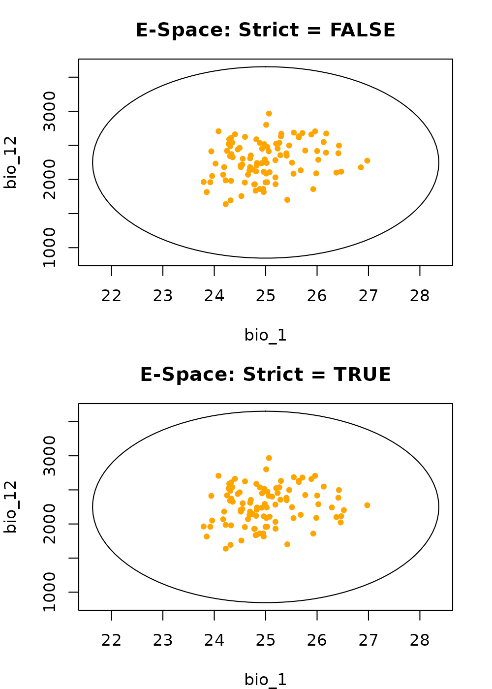

Generate occurrence data with virtual data
Source:vignettes/generating_virtual_data.Rmd
generating_virtual_data.RmdSummary
- Description
- Getting ready
- Basic generation
-
Effect of the
samplingargument -
Effect of the
methodargument -
Effect of the
strictargument - A note on G-space
- Save and export
Description
Virtual species are highly useful for controlled, purely theoretical experiments in quantitative ecology. This workflow allows you to simulate species data entirely within Environmental Space (E-Space), bypassing geographic rasters. This is ideal for testing how models perform under different sampling biases without the confounding influence of real-world landscape fragmentation.
Getting ready
First, we load nicheR and define a fundamental niche. We also use virtual_data() to generate an environmental “background” of 1,000 points that our virtual species can potentially inhabit.
# Load packages
library(nicheR)
# 1. Define Niche Space
range_df <- data.frame(bio_1 = c(22, 28),
bio_12 = c(1000, 3500),
bio_15 = c(50, 70))
ell <- build_ellipsoid(range = range_df)
# 2. Generate Environmental Background (The "Universe")
# We draw 1,000 points from the mathematical distribution of the niche
virt_bg <- virtual_data(ell, n = 1000, truncate = FALSE, effect = "direct", seed = 1)
# 3. Predict Suitability for the Background
# We score our background points so we can sample from them
pred_virt <- predict(ell, newdata = virt_bg, include_suitability = TRUE,
suitability_truncated = TRUE, keep_data = TRUE)Basic generation
The sample_virtual_data() function acts as the
non-spatial twin to sample_data(). It picks “occurrences”
from our virtual background based on the suitability scores we just
calculated.
# Generate basic virtual occurrence data
occ_virt_basic <- sample_virtual_data(
n_occ = 100,
object = ell,
virtual_prediction = pred_virt,
prediction_layer = "suitability",
seed = 123
)
#> Starting: sample_virtual_data()
#> Warning in resolve_prediction(virtual_prediction, prediction_layer):
#> 'prediction' is a data.frame, and it is missing 'x' and 'y', results wont show
#> geographical connections.
#> Done: sampled 100 points.
head(occ_virt_basic)
#> bio_1 bio_12 bio_15 Mahalanobis suitability suitability_trunc
#> 356 25.45661 2498.431 58.86515 0.6798950 0.7118077 0.7118077
#> 720 25.96074 2706.620 58.74015 2.2668354 0.3219311 0.3219311
#> 74 24.95347 1860.793 60.84983 0.9397016 0.6250955 0.6250955
#> 29 23.95850 2050.771 55.63882 3.0251331 0.2203437 0.2203437
#> 651 26.97629 2275.384 59.88062 3.9107082 0.1415144 0.1415144
#> 655 25.28578 2355.890 60.21157 0.1502863 0.9276107 0.9276107Visualizing basic generation
Since virtual data does not have Latitude/Longitude, we visualize it exclusively in E-Space. We will look at two pairs of dimensions to see how the generated points sit within the niche volume.
1. Environmental Space Bio1 vs. Bio12
The gray dots are our 1,000 background points. The orange dots are the 100 individuals we sampled based on suitability. Notice they cluster toward the center (red square) because higher suitability exists there.
plot_ellipsoid(ell, dim = c(1, 2), pch = ".", col_bg = "#9a9797",
xlab = "Bio1 (Temp)", ylab = "Bio12 (Precip)", main = "E-Space: Temp vs Precip")
add_data(occ_virt_basic, x = "bio_1", y = "bio_12", pts_col = "orange", pch = 20)
add_data(as.data.frame(t(ell$centroid)), x = "bio_1", y = "bio_12", pts_col = "red", pch = 15, cex = 1.5)
2. Environmental Space Bio1 vs. Bio15
Viewing the same points along the Seasonality (Bio15) axis ensures the sampling is consistent across the 3D ellipsoid.
plot_ellipsoid(ell, dim = c(1, 3), pch = ".", col_bg = "#9a9797",
xlab = "Bio1 (Temp)", ylab = "Bio15 (Seasonality)", main = "E-Space: Temp vs Seasonality")
add_data(occ_virt_basic, x = "bio_1", y = "bio_15", pts_col = "orange", pch = 20)
add_data(as.data.frame(t(ell$centroid)), x = "bio_1", y = "bio_15", pts_col = "red", pch = 15, cex = 1.5)
Effect of the sampling argument
The sampling argument dictates which part of the niche
the individuals “prefer” to occupy.
occ_cent <- sample_virtual_data(100, ell, pred_virt, "suitability", sampling = "centroid", seed = 123)
#> Starting: sample_virtual_data()
#> Warning in resolve_prediction(virtual_prediction, prediction_layer):
#> 'prediction' is a data.frame, and it is missing 'x' and 'y', results wont show
#> geographical connections.
#> Done: sampled 100 points.
occ_edge <- sample_virtual_data(100, ell, pred_virt, "suitability", sampling = "edge", seed = 123)
#> Starting: sample_virtual_data()
#> Warning in resolve_prediction(virtual_prediction, prediction_layer):
#> 'prediction' is a data.frame, and it is missing 'x' and 'y', results wont show
#> geographical connections.
#> Done: sampled 100 points.
occ_rand <- sample_virtual_data(100, ell, pred_virt, "suitability", sampling = "random", seed = 123)
#> Starting: sample_virtual_data()
#> Warning in resolve_prediction(virtual_prediction, prediction_layer):
#> 'prediction' is a data.frame, and it is missing 'x' and 'y', results wont show
#> geographical connections.
#> Done: sampled 100 points.Visualizing spatial bias
In virtual space, “spatial bias” refers to the distribution relative to the niche center.
Centroid vs. Edge vs. Random: In Centroid, orange dots huddle at the red square. In Edge, they are repelled to the purple boundary line. In Random, they fill the ellipsoid evenly.
par(mfrow = c(3, 1), mar = c(4, 4, 3, 2))
# Centroid
plot_ellipsoid(ell, dim = c(1, 2), pch = ".", col_bg = "#9a9797", main = "E-Space: Centroid Sampling")
add_data(occ_cent, x = "bio_1", y = "bio_12", pts_col = "orange", pch = 20)
# Edge
plot_ellipsoid(ell, dim = c(1, 2), pch = ".", col_bg = "#9a9797", main = "E-Space: Edge Sampling")
add_data(occ_edge, x = "bio_1", y = "bio_12", pts_col = "orange", pch = 20)
# Random
plot_ellipsoid(ell, dim = c(1, 2), pch = ".", col_bg = "#9a9797", main = "E-Space: Random Sampling")
add_data(occ_rand, x = "bio_1", y = "bio_12", pts_col = "orange", pch = 20)
Effect of the method argument
The method argument changes the mathematical weight used
to draw points from the 1,000 background candidates.
occ_meth_suit <- sample_virtual_data(100, ell, pred_virt, "suitability", method = "suitability", seed = 123)
#> Starting: sample_virtual_data()
#> Warning in resolve_prediction(virtual_prediction, prediction_layer):
#> 'prediction' is a data.frame, and it is missing 'x' and 'y', results wont show
#> geographical connections.
#> Done: sampled 100 points.
occ_meth_maha <- sample_virtual_data(100, ell, pred_virt, "Mahalanobis", method = "mahalanobis", seed = 123)
#> Starting: sample_virtual_data()
#> Warning in resolve_prediction(virtual_prediction, prediction_layer):
#> 'prediction' is a data.frame, and it is missing 'x' and 'y', results wont show
#> geographical connections.
#> Done: sampled 100 points.Visualizing probability weights
Suitability vs. Mahalanobis: The Mahalanobis method creates a much tighter concentration of points in the niche core compared to the Suitability method, as it penalizes environmental distance more severely.
par(mfrow = c(2, 1), mar = c(4, 4, 3, 2))
# Suitability
plot_ellipsoid(ell, dim = c(1, 2), pch = ".", col_bg = "#9a9797", main = "E-Space: Method = Suitability")
add_data(occ_meth_suit, x = "bio_1", y = "bio_12", pts_col = "orange", pch = 20)
# Mahalanobis
plot_ellipsoid(ell, dim = c(1, 2), pch = ".", col_bg = "#9a9797", main = "E-Space: Method = Mahalanobis")
add_data(occ_meth_maha, x = "bio_1", y = "bio_12", pts_col = "orange", pch = 20)
Effect of the strict argument
The strict argument determines if the virtual
individuals can exist in “sink” environments outside the fundamental
niche boundary.
# Allow points in marginal background outside the ellipse
occ_lax <- sample_virtual_data(100, ell, pred_virt, "suitability", strict = FALSE, seed = 123)
#> Starting: sample_virtual_data()
#> Warning in resolve_prediction(virtual_prediction, prediction_layer):
#> 'prediction' is a data.frame, and it is missing 'x' and 'y', results wont show
#> geographical connections.
#> Done: sampled 100 points.
# Force points to remain inside the ellipse
occ_strict <- sample_virtual_data(100, ell, pred_virt, "suitability_trunc", strict = TRUE, seed = 123)
#> Starting: sample_virtual_data()
#> Warning in resolve_prediction(virtual_prediction, prediction_layer):
#> 'prediction' is a data.frame, and it is missing 'x' and 'y', results wont show
#> geographical connections.
#> Done: sampled 100 points.Visualizing boundary limits
Strict = FALSE vs. Strict = TRUE: When
strict = FALSE, you can see orange dots drifting outside
the purple ellipse line. When strict = TRUE, the boundary
acts as a hard wall.
par(mfrow = c(2, 1), mar = c(4, 4, 3, 2))
# False
plot_ellipsoid(ell, dim = c(1, 2), pch = ".", col_bg = "#9a9797", main = "E-Space: Strict = FALSE")
add_data(occ_lax, x = "bio_1", y = "bio_12", pts_col = "orange", pch = 20)
# True
plot_ellipsoid(ell, dim = c(1, 2), pch = ".", col_bg = "#9a9797", main = "E-Space: Strict = TRUE")
add_data(occ_strict, x = "bio_1", y = "bio_12", pts_col = "orange", pch = 20)
A note on G-space
Because the virtual_data() function generates points
purely based on statistical distributions within environmental
dimensions (e.g., Temperature and Precipitation), these points
do not possess spatial coordinates (Longitude/Latitude).
Consequently, pure virtual species simulated via this method exist exclusively in E-Space and cannot be directly plotted onto a geographic map (G-Space) without first projecting the niche model onto a physical landscape raster.
Save and export
Since the generated virtual occurrences are standard data frames, we
save them using saveRDS().
# Save the basic virtual occurrence dataset
# saveRDS(occ_virt_basic, file = "data/virtual_occurrences.rd")